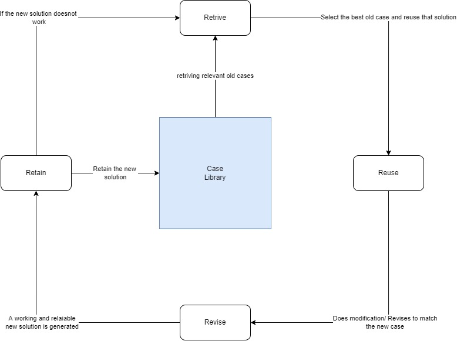

CBR - Case Based Reasoning
CBR is a reasoning and problem solving system that uses a large library of cases(problems) that it
solved in the past to solve the new cases (unsolved present problem).
It is a cyclic and intergrated process where it uses the old cases solution and also intergate it
and learn from it back to the system.
The advantages of CBR systems are:
- Almost all of the work is performed virtually in query time saving alot of memory
- It can be both problem solving and a self learning system
- It can be used in regression and classification problems
Some examples are: CHEF, Meal planning system, CASEY (diagnoses cardiac diseases based on diagnosis of earlier patient), etc
The main 4 process of CBR are:
-
Retrive
In this step the CBR system retrives all the previous cases that are similar to the new case presented.
-
Reuse
In this step the CBR system reuses the most effective case solution it can find to solve the new case.
-
Revise
In this step the CBR system revises the solution it came up with for the new case and check if that works or needs to be revised again.
-
Retain
In this step the CBR system retains the new revised solution to the new case if it is relaible and can be useful in the future.
